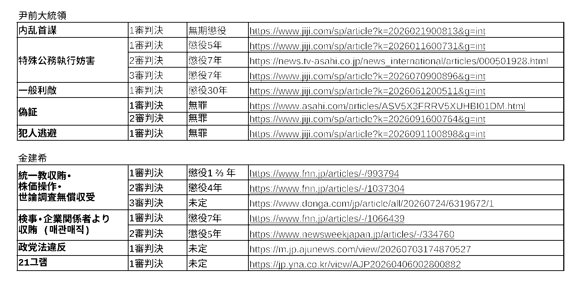
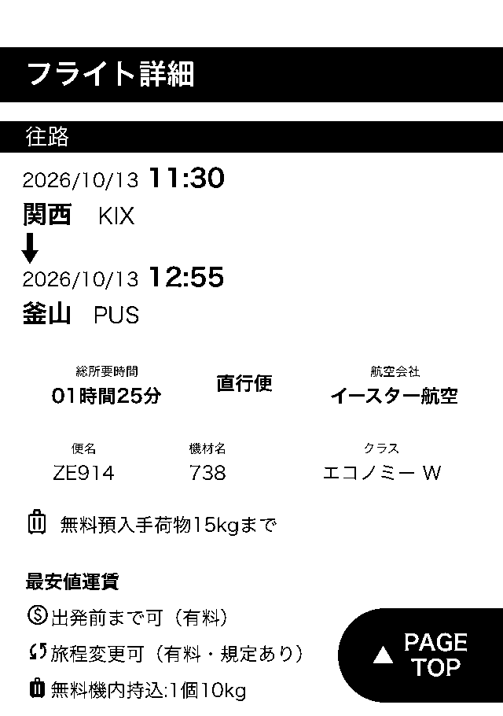
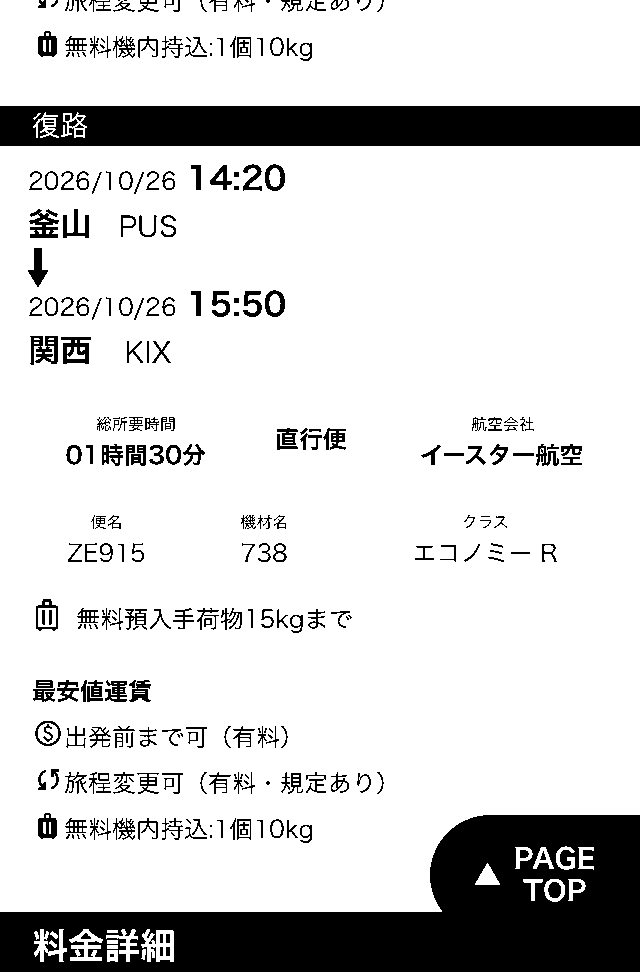
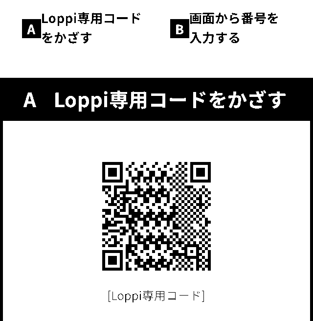
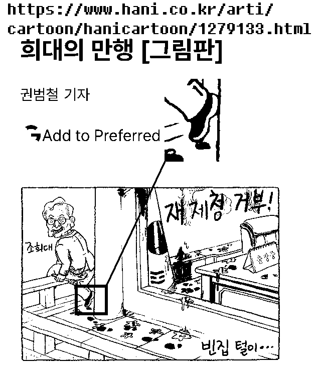

26. 10. 5



사진:
https://drive.google.com/file/d/1yJIsv-tQykPVAx81HCx-xuouEWfnQqVf/view?usp=drivesdk
https://drive.google.com/file/d/1AhpI7j-eJLUj9osEN4cG7pluu5l5b_OG/view?usp=drivesdk
동영상:
https://drive.google.com/file/d/1xDE27N8MVkpZw68_O4t243Iz6B7eA57G/view?usp=drivesdk
https://drive.google.com/file/d/1JlR7r1Y9vHUIr_HpIeMeLyapzOyGANvE/view?usp=drivesdk
https://drive.google.com/file/d/12BU3TQpPpcEmHF1voFWCFFIEa1rEX4_e/view?usp=drivesdk
下記は曺大法院長の国政監査(국정 감사; 略して국감)への不参加についての記事です。この方は先日の国軍の日(10. 1)の行事にも欠席していたようです。
조희대 "국정감사서 밝히겠다"더니‥국감 이틀 앞두고 "증언 못 해"
https://imnews.imbc.com/replay/2026/nwdesk/article/6855723_37004.html
私が使っている環境ではまだ週間裁判スケジュールが取得できていないのですが、今週は下記の尹前大統領の世論調査収受事件の2審宣告があるそうなので裁判が全く無いということはないと思います。(この事件名から分かるようにこれは内乱首謀罪のような大きなものではありません。無罪判決が出る可能性もあるかも知れません)
정치 브로커 명태균씨로부터 여론조사를 무상으로 받은 혐의로 1심에서 징역 2년을 선고받은 윤석열 전 대통령 항소심 선고가 이번 주 이뤄진다. 4일 법조계에 따르면 서울고법 형사7부(구회근 부장판사)는 오는 7일 오후 2시 윤 전 대통령과 명씨의 정치자금법 위반 혐의 항소심 선고기일을 연다. 윤 전 대통령은 배우자인 김건희 여사와 공모해 2021년 6월∼2022년 3월 명씨로부터 여론조사 58차례를 무상으로 받은 혐의로 재판에 넘겨졌다. 1심은 공소사실 중 여론조사 14차례를 무상 수수했다고 인정해 윤 전 대통령에게 징역 2년과 추징금 1천396만여원을 선고했다.
尹부부 유무죄 엇갈린 '명태균 여론조사'…이번주 尹 2심 선고
https://www.yna.co.kr/view/AKR20261003046800004
今週の裁判スケジュールについては下記を開くか、下記ページの右上にある検索欄に「이번주 법조 일정」と入力し各自で探してみて下さい。今日は開天節の振替休日ですので裁判は開かれないはずです。
https://www.lawtimes.co.kr/news/articleList.html?sc_serial_code=SRN36
今日が開天節の振替休日であることは下記に書かれてあったと思います。
2026年・2027年韓国の祝祭日完全ガイド
https://japanese.visitkorea.or.kr/svc/contents/contentsView.do?vcontsId=140045
오늘의 부엌 영상(결국 날씨 뉴스를 사용했습니다):
https://drive.google.com/file/d/10NIxW8GMyI8rKddZ9D6vMp_zVnMg09HW/view?usp=drivesdk
https://drive.google.com/file/d/1zHXiLyzvMTqo90ea-tUnX4RNwRfeiWeH/view?usp=drivesdk
전국 흐리고 곳곳 비…오후부터 기온 하락[오늘날씨]
https://mobile.newsis.com/view/NISX20261004_0003814071
PS: 당신도 아시는 것이니까 이걸 말하지만 전부터 소문을 내고 있을 수 있는 니시카와라는 일본 사람은 정신병자이랍니다. 저의 방침은 다음과 같이 말할 수 있습니다. 제가 한국인이신 당신과 결혼할 수 없을 경우엔 저는 그대로 죽겠습니다.
안녕하세요? 어제 말한 바와 같이 일단 부산이나 대구를 방문하는 방식으로 계획을 세워 봅니다. 그런데 제가 어제 느낀 건 제가 외국의 뉴스에 언급해 왔기 때문에 일본 사람들이 저의 머리가 이상하다고 생각하고 그런 소문이 그대로 한국으로 퍼졌을 가능성이 있다는 점입니다. 외국의 뉴스는 물론 일본에서도 신문 등이 보도하고 있지만 세상 대부분의 사람들이 거의 관심이 없어서 그런 뉴스를 내지 않는 매체도 있는 것 같습니다. 한국 분들은 그런 나라가 있을 리가 없다고 하실 것이지만, 역시 일본은 한 특수한 국가일 것이라고 저는 이같이 보고 있습니다. 앞으로도 윤석열과 김건희 그리고 조희대 대법원장에 대해 말할 때도 있을 것인데요 기타에 대해선 거의 언급하지 않을 것입니다. 부엌 영상을 낼 땐 다우존스 지수나 닛케이 평균 주가 등의 숫자를 사용하기로 하지만 전날이 거래소 휴일일 경우에 그런 숫자 대신에 연합뉴스(또는 중앙일보) 속 최신기사 URL의 마지막 부분(알파벳과 숫자로 구성된 일)을 사용할 것입니다. 오늘도 오전 10시경에 마르야스에 가요.
26. 10. 4
저는 이달이 '기억과 애도의 달'이라고 알았지만 이미 약속한 일이니까 이달에 한국에 가기로 했습니다. 오는 이십구일보다 더 전에 서울이 아닌 부산이나 대구를 방문할까 생각하고 있는 중인데요. (왠지 모르지만 이런 가운데에 서울에 가는 것이 안좋은 일이라는 느낌이 드니까) 제가 말해 온 일이 기독교도 분들을 화내게 했을 수도 있으니까 앞으론 이상한 말을 삼가하고 더 신중할 것입니다. 당신이 이미 저를 떠나시고 다른 사람과 결혼하셨다고 해도 한국에선 결혼 후에도 성이 바꾸지 않으니까 알 수가 없는데요. 다만 저는 마지막까지 해 가야 합니다. 아마 수일 동안 한국에 있고 일본에 다시 돌아올 것인데 지옥에 가기 전의 잠시간 휴가가 될 거예요. 안녕히 주무세요 한국인이시고 아마존 KIX3에서 일을 하신 Lee씨, 제가 사랑하는 유일하신 분.
이태원 4주기 '기억과 애도의 달' 선포‥160번째 희생자 사진 걸려
https://imnews.imbc.com/news/2026/society/article/6855188_36918.html
下記のニュース記事(映像)も今日出たものです。
대법원 관계자는 "전원합의 기일을 몇 차례나 열지는 정해져 있지 않다"며 "선고 시점은 사건 검토와 심리 진행 상황에 따라 달라지는 것이라 예상할 수 없다"고 밝혔습니다. 김건희 특검은 구속기한 만료 전까지 3대 의혹 사건의 선고기일이 잡히지 않을 경우 김 씨 매관매직 사건 상고심에서 추가 구속영장을 청구할 방침입니다.
김건희 3대 의혹 전합 심리 시작…선고 언제쯤?
https://m.yonhapnewstv.co.kr/news/MYH20261004102431PAA
私が数ヶ月前から履いていた、ホームセンターで買った靴が原因で何らかの噂が流れていた可能性もありますので、今後はこの靴を履かないことにします。私は以前履いていた靴の靴底の一部が剥がれていたのでこれを買ったのですが、下記のハンギョレ新聞掲載の漫画に登場する曺大法院長が履かれている靴が何故かこれとよく似ていたので(靴底の白い部分といい)韓国でも何か良からぬ噂が流れているのでは、と思いました。
희대의 만행 [그림판]
https://www.hani.co.kr/arti/cartoon/hanicartoon/1279133.html

(再揭) クロネコヤマトについてもう一度書いておくと、噂を流していたと思われる契約社員(灰色の制服を着た社員)は関西ゲートウェイ(茨木にあるセンター)にて私が派遣社員として夕方から午後10時頃まで働いていた際に、クールでないフロアのA(アルファ)ブロックにいた方です。私が韓国のLeeさんと結婚した場合にどのような仕事をするのかは分かりませんが、場合によってはクロネコヤマトが困ることになるかも知れません。最近気になっているのはクロネコヤマトのドライバーの方々です。恐らく私が買い物等に出かける時刻は把握されていると思いますが、あまりに頻繁に見かけるので本来の業務指示を無視して私を偵察しに来ているのではないかとも思います。
(再掲) 今週の裁判スケジュールについては下記を開くか、下記ページの右上にある検索欄に「이번주 법조 일정」と入力し各自で探してみて下さい。私も後でWifiスポットに行った際に探してみます。(明日(月曜日)は開天節の振替休日ですので裁判は開かれないはずです) * 開天節の影響等で今日出ない可能性もありますが、一応夕方まで検索し続けてみて下さい。そして出てきたら記事の作成時刻を確認して下さい。
https://www.lawtimes.co.kr/news/articleList.html?sc_serial_code=SRN36
恐らくハングルの読み書きが出来ない為に金建希の事件等についての私の説明を信じることが出来ないという方もおられると思います。下記の英語媒体に必ず金建希についてのニュースが出るとは限りませんが、一度これらのニュースサイトの検索欄に'Kim Keon Hee'と入力してみて下さい。
The Korea Herald
The Korea Times
The Chosun Daily
https://www.chosun.com/english/
Seoul Economic Daily
The Herald Business
https://mbiz.heraldcorp.com/en
The Asia Business Daily
KBS WORLD
http://world.kbs.co.kr/service/index.htm?lang=e
SBS NEWS
https://mnews.sbs.co.kr/english/newsMain.do
以前紹介した下記の日本語の記事に「特別検察官は大法廷の審理状況を見極め、拘束期限までに結論が出るのが難しいと判断した場合、この別事件の上告審で追加の拘束令状を請求する方針だ」とあるように、最高裁判決が出ない場合に検察が拘束令状を請求することはほぼ確実であるようです。またこれまで金建希に対するこのような拘束令状請求が却下されたことは一度もないはずですので、私は金建希が10月末に釈放される可能性は低いと思っています。ですので今週中に韓国訪問の準備はほぼ済ませてしまおうかとも考えています。前回は偶々九老区のホテルに宿泊したのですが、これが原因で私が金建希が好きだといった噂が流れた可能性もあるので(九老区に金建希が収監されているソウル南部拘置所があるからです)今回は九老区から離れた所に留まることにします。
大法廷での結論が出ないまま拘束期限を迎え、キム・ゴニ氏が釈放される可能性もある。拘束期限は10月31日までとなっている。 これを受け、特別検察官はキム・ゴニ氏に対する追加の拘束令状請求を検討している。キム・ゴニ氏は22日、人事上の便宜を図る見返りなどとして各種金品を受け取ったとする別の事件で、二審で懲役5年を言い渡され、翌日に上告した。 特別検察官は大法廷の審理状況を見極め、拘束期限までに結論が出るのが難しいと判断した場合、この別事件の上告審で追加の拘束令状を請求する方針だ。
(9. 30) 韓国最高裁、金建希氏の上告審で初めての審理…拘束期限は10月末
https://www.afpbb.com/articles/-/3655268?act=all
今朝手紙に書いたように金建希の最高裁判決についての日程が一向に明らかにならないので10月末に拘束期間満了となる金建希に対して追加の拘束令状が発付されるか否か、言い換えれば金建希が10月末に釈放されるか否かによって韓国訪問の計画を立てることにします。これは金建希が半永久的ではないにせよ、釈放されないことが確かなものとなった場合に韓国に行くということです。これについてのニュースは恐らく日本でも報道されるだろうと思います。またこのような発表をすることによって人々から受ける迫害がやや軽減されるかと思いますので、中日関係についてはあまり述べないことにします。(私は日本の方々が事実を理解することは絶対に無く、中日関係が改善することも絶対に無いと思っています)
안녕하세요? 총명한 한국인이신 당신은 어제 제가 말한 중일 관계에 대한 문제를 이해하셨을 것이지만 오늘도 아침부터 소음이 심했으니까 아마 쓰레기 같은 일본 사람들에겐 효과가 없었을 것 같습니다. 일본 쓰레기들은 이상한 건물 내에 살고 있는 컬트 교단 신도들과 같네요. 그들의 무의식 속에 있는 공통된 일은 외국인을 배제하자는 소리이랍니다. 쓰레기 같은 일본 사람들은 '외국인을 배제하자. 다만 중국의 돈을 받고 싶다'고 하고 있는 것 같아요. 그런 사람들 사이에 있어서 다카이치 씨가 지지를 받지 않을 리가 없고, 우리가 박해를 당하는 건 당연할지도 모릅니다. 오늘도 오전 10시경에 마르야스에 갑니다.
下記は今朝出た全員合議体(日本での大法廷に相当)が行う金建希の事件の審理についてのニュース記事(映像)ですが、これには新しい情報は何も無いようです。
[앵커] 청와대와 사법부 간 갈등으로 대법관 한 자리가 장기 공백에 놓인 가운데 전원합의체에 회부된 김건희 씨의 3대 의혹 상고심 심리가 본격 시작됐습니다. 김 씨의 구속 기간은 이번 달 말 종료되는데, 전원합의체 선고 기일은 아직 잡히지 않았습니다.
'재제청 갈등' 속 전합 심리...김건희 구속만료 전 결론?